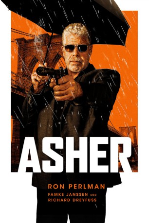

#11923 Asher
 
 IMDB-Wertung: 5.4 / 10
IMDB-Wertung: 5.4 / 10  Tomatometer: 46
Tomatometer: 46  Metascore: 58
Metascore: 58 
Ex-Mossad-Agent Asher hat schon bessere Tage gesehen. Als Auftragskiller führt er in Brooklyn ein einsames Leben, dessen einzige Freude seine Kochkünste sind. Auch seine Karriere geht langsam aufs Ende zu, Asher ist nicht mehr so treffsicher wie einst. Doch Killer treten nicht einfach in den Ruhestand. Als sein Herz bei einem Einsatz versagt, bricht er vor der Tür der Ballettlehrerin Sophie zusammen. Kann Asher mit ihr ein ganz neues Leben beginnen? Sein Boss duldet kein Versagen und schickt ihm die jungen Kollegen auf den Hals. Bald muss Asher um sein Leben und um sein Glück kämpfen.
Jahr: 2018
Dauer: 104 Minuten
FSK: 16
Land: USA Studio: Momentum PicturesTonspuren: DTS - ,
Untertitel: Deutsch,
Auflösung: 1080p (1920x800) Größe: 5560 MB
Genre: Action, Thriller, Drama
Regisseur: Michael Caton-Jones
Drehbuch: Jay Zaretsky
Soundtrack: Simon Boswell
Darsteller:
 Ron Perlman als Asher
Ron Perlman als Asher Famke Janssen als Sophie
Famke Janssen als Sophie Jacqueline Bisset als Dora
Jacqueline Bisset als Dora Marta Milans als Marina
Marta Milans als Marina Guy Burnet als Lyor
Guy Burnet als Lyor Ned Eisenberg als Abram
Ned Eisenberg als Abram David Wohl als Dr. Green
David Wohl als Dr. Green Peter Facinelli als Uziel
Peter Facinelli als Uziel Richard Dreyfuss als Avi
Richard Dreyfuss als Avi Blake Perlman als Hannah
Blake Perlman als Hannah- Joseph Siprut als Craig
 Micah Hauptman als Reuben
Micah Hauptman als Reuben- Alton Fitzgerald White als Berenger
- John B. McCann als Bum
- Bobby Daniel Rodriguez als Latin Man
- William Perry als Black Fella
- Anthony Mecca als Sammi
 Jay Hieron als Dior
Jay Hieron als Dior- Salar Ghajar als Uziel's Guy #1
- Neimah Djourabchi als Uziel's Guy #2
- Anthony Ferretti als Reuben's Guard #1
- Aaron Joshua als Reuben's Guard #2
- Ben Rezendes als Avi's Guard #1
- Paul Spitale als Bartender
- J.C. Holloway als Hotel Guest (uncredited)
- Patrick Klein als Assasin (uncredited)
- Wyatt Lozano als Mafia Bodyguard (uncredited)
- Heidi Philipsen als Rafi's Wife (uncredited)
- Mark Quiles als Uziel's Crew (uncredited)
- Rita Raider als Girl On Platform (uncredited)
- Hannah Viederman als Chia Girl
- Henry Yuk als Khan
- Charles DelGatto als Bodega Clerk
- Earl Weathers als Haitian Guy
- Evan Taylor als Uziel's Guy #3
- Jose Jimenez als Reuben's Guard #3
- Luis Moco als Avi's Guard #2
- Robert Gugliuzzo als Wine Stock Boy (uncredited)
- Maximilian Amadeus Meisner als Rafi's Son (uncredited)
- Sophie Elise Meissner als Rafi's Daughter (uncredited)
- Dannielle Rose als Upscale Hotel Bar Patron (uncredited)
Datei: X:\2018(A-F)\Asher (2018, FSK16, 1920x800).mkv seit 26.10.2019
Festplatte: HD 2017(A-Z)-2018(A-F)
 Es gibt insgesamt 151 Filme in der Gruppe '2018(A-F)'
Es gibt insgesamt 151 Filme in der Gruppe '2018(A-F)'